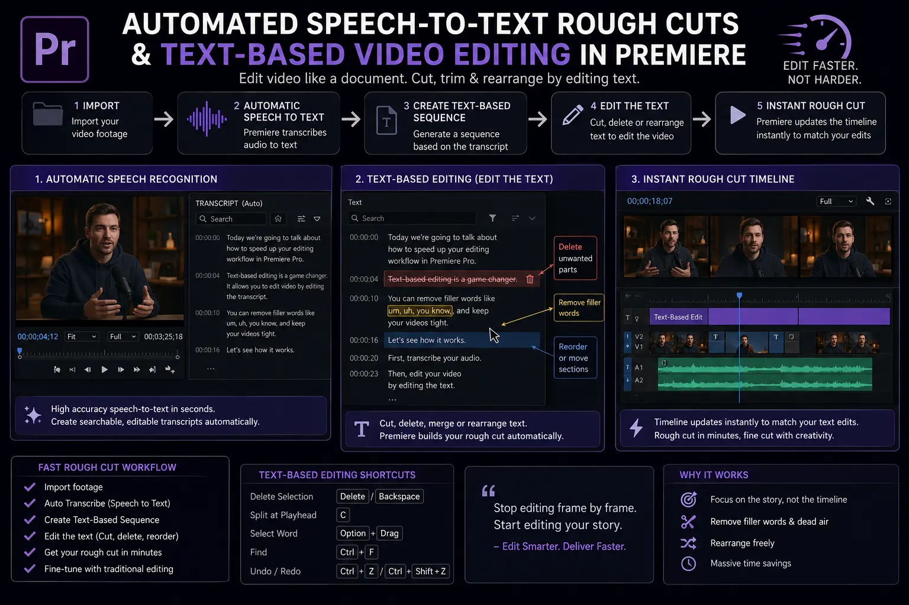
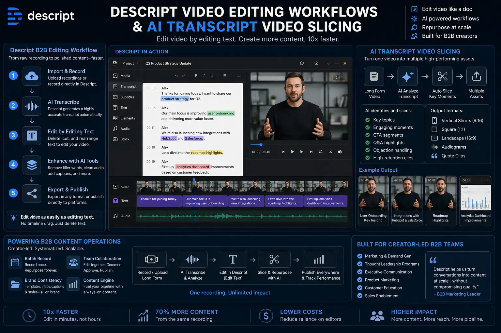

Accelerating Rough Cuts Using AI Text-Based Video Editing
The Post-Production Bottleneck in Modern Creator-Led B2B Video Production
In the rapidly evolving landscape of modern enterprise marketing, Creator-Led B2B Video Production has established itself as the single most potent engine for building trust, authority, and demand generation. Corporate decision-makers no longer respond to generic stock-footage ads or dry corporate slide decks; they connect with authentic executive perspectives, technical breakdowns, founder interviews, and subject-matter expert deep dives. However, as B2B brands scale their media output, they inevitably run into a massive structural bottleneck: the post-production assembly phase.
Historically, creating a single 30-minute executive interview required a video editor to manually scrub through hours of raw camera footage, log timecodes, take manual notes, and perform tedious ripple deletes to compile a preliminary sequence. This legacy workflow meant that assembling a first draft—the rough cut—consumed up to 70% of the total post-production schedule. Editors spent more time performing robotic housekeeping than polishing narratives, designing visual motion, or refining sound design.
Enter AI Text-Based Video Editing. By harnessing automated speech-to-text algorithms and neural transcript mapping, text-based workflows transform video editing from a slow visual scrubbing process into a lightning-fast document manipulation exercise. Editors and content strategists can now skim, search, highlight, and edit video footage as easily as editing a Google Doc, implementing fast rough cut editing techniques that compress days of assembly labor into a fraction of an hour.
The Architecture of Automated Speech-to-Text Rough Cuts
At its core, Automated Speech-to-Text Rough Cuts rely on deep-learning natural language processing (NLP) models that analyze spoken audio tracks and generate sample-accurate, timecode-synced transcripts. Unlike legacy caption generators of the past that suffered from poor accuracy and drift, modern AI transcription models achieve upwards of 98% accuracy across complex technical industry jargon, acronyms, and varying regional accents.
When raw footage is ingested into a text-driven editor, the system builds an interactive transcript where every individual word is directly bound to its exact frame coordinates on the underlying audio and video tracks. When a user highlights a paragraph of text and presses delete, the editor automatically performs a frame-accurate ripple delete on the video timeline. Conversely, when an editor copies a section from the beginning of the text document and pastes it at the end, the corresponding video clips rearrange themselves instantly.
This tight coupling of transcript and timeline powers advanced fast rough cut editing techniques. Rather than watching a 45-minute recording at 1.5x speed, content producers can perform keyword searches for specific concepts (e.g., "ROI", "implementation framework", "case study"), instantly jumping to the exact moment in the footage where the speaker delivers the insight. This capability fundamentally transforms how B2B content operations approach content curation and story architecture.
70% Speed Increase
By replacing manual timeline scrubbing with instant text search and paragraph selection, Automated Speech-to-Text Rough Cuts accelerate preliminary video assembly by 60% to 80%.
Instant Verbal Cleanup
Leverage algorithms dedicated to deleting filler words automatically with AI, removing "ums", "uhs", and false starts across entire multi-track shoots with a single click.
Multi-Platform Repurposing
Utilize AI transcript video slicing to extract dozens of short-form social highlights, clips, and audiograms from a single long-form executive interview session.
Collaborative Scripting
Enable non-technical stakeholders, copywriters, and marketing directors to review transcripts and build rough edits without opening complex professional video software.

Eliminating Executive Verbal Stumbles: Deleting Filler Words Automatically with AI
Even the most seasoned corporate executives and technical founders naturally drop filler words—such as "um", "uh", "you know", "like", and "so"—when delivering unscripted long-form commentary. In live keynotes or informal discussions, these verbal pauses are completely natural. However, when packaged into high-stakes sales enablement videos, customer case studies, or social thought leadership clips, unedited stumbles can dilute authority and cause viewer drop-off.
Manually hunting down and trimming hundreds of verbal stumbles across an hour-long recording is one of the most tedious tasks in traditional editing. By adopting workflows focused on deleting filler words automatically with AI, post-production teams can automate this entire cleanup pass. The AI engine identifies every acoustic instance of non-essential filler words and long silent gaps, allowing editors to review and remove them globally in seconds.
The result is a razor-sharp narrative where the speaker sounds exceptionally polished and articulate, while maintaining natural pacing. Furthermore, advanced AI algorithms apply subtle crossfades and audio smoothing across cut points, ensuring that the background room tone remains continuous and completely free of jarring clicks or pops. For modern B2B content operations, this automated polish ensures brand-consistent executive presentation across high-volume video pipelines.
Comparing Production Toolstacks: Premiere Pro vs. Descript Workflows
As AI Text-Based Video Editing matures into an industry standard, creative agencies and in-house video teams must select the appropriate software architecture for their production pipelines. Today, two major paradigms dominate the market: native professional NLE integration (such as Premiere Pro) and document-centric collaborative platforms (such as Descript).
Premiere Pro Text-Based Editing
- Native Timeline Integration: Performs Text-based video editing in Premiere directly inside industry-standard multi-track timelines.
- Advanced Technical Control: Retains complete access to raw camera profiles, Log color grading, multi-cam switching, and complex audio routing.
- Professional Output: Ideal for high-end documentary-style corporate brand films and commercials requiring fine-grained finishing.
Descript Video Editing Workflows
- Document-First UX: Innovative Descript video editing workflows designed around an intuitive word processor interface.
- AI Feature Suite: Built-in AI voice cloning (Overdub), Studio Sound audio restoration, eye-contact correction, and one-click filler word removal.
- Rapid Repurposing: Enables fast multi-format canvas adjustments, template overlays, and direct social video publishing.
Hybrid Enterprise Pipeline
- Rapid Rough Assembly: Content strategists build initial stories in Descript or Premiere text windows in minutes.
- XML / EDL Handoff: Export cut decisions seamlessly into full professional suites for colorists and sound mixers.
- Optimized Operations: Combines speed of text-driven assembly with high-end broadcast finishing standards.
Text-based video editing in Premiere offers an immense advantage for established post-production houses because it keeps the transcript editing feature synchronized within the native timeline. Editors can transcribe raw multi-camera interviews, highlight the strongest takes in the Text panel, and insert them directly into the primary sequence timeline. Because it operates within Premiere, editors do not need to round-trip media between third-party applications, preserving complex project structures, Lumetri color grades, and dynamic motion graphics templates.
On the other hand, Descript video editing workflows excel in environments where speed, cross-functional collaboration, and rapid social media repurposing are paramount. Marketing directors, podcast producers, and non-editing team members can open a project, trim text, select key soundbites, and comment on specific transcript sentences without needing specialized NLE expertise. Once the rough narrative is locked, teams can either publish directly or export an XML/EDL project file to hand off to finishing artists.

Scaling Creator-Led B2B Video Production with AI Transcript Video Slicing
To maximize ROI on Creator-Led B2B Video Production, high-growth organizations must extract maximum value from every single filming session. A 60-minute podcast or executive studio session should not result in just one long-form video; it should serve as the cornerstone asset for an entire omni-channel media campaign.
This is where AI transcript video slicing revolutionizes content distribution. By applying AI analysis across the full transcript of a long recording, intelligent tools automatically flag thematic chapters, standalone insights, high-energy hooks, and concise answers to common industry questions. Editors can review these AI-suggested soundbites, refine the start and end points via text, and export dozens of vertical 9:16 video clips optimized for LinkedIn, Instagram Reels, YouTube Shorts, and X.
By deploying these fast rough cut editing techniques across batch-recorded executive content, modern marketing teams can maintain a daily publishing cadence on social media without exhausting executive availability or overworking post-production staff. The combination of automated assembly, filler word stripping, and intelligent clip slicing creates a frictionless content pipeline.
Building a High-Efficiency B2B Content Operations Workflow
Successfully integrating text-based video tools into enterprise B2B content operations requires establishing clear Standard Operating Procedures (SOPs). Below is a proven 5-step framework used by leading media teams to turn raw executive recordings into publishable assets:
- 1. Ingestion & Automated Transcription: Immediately upon wrapping a shoot, upload high-resolution multi-track A/V assets into your text-based editor. Generate sample-accurate transcripts with automatic speaker diarization (labeling who spoke when).
- 2. Automated Silence & Verbal Cleanup: Run automated detection algorithms for deleting filler words automatically with AI alongside automatic silence removal to instantly strip out pauses longer than 1.5 seconds.
- 3. Text-Driven Narrative Assembly: Have the producer or editor review the transcript text, copying and pasting key arguments into a structured master sequence. Use Text-based video editing in Premiere or Descript video editing workflows to refine the narrative arc in minutes.
- 4. AI Transcript Video Slicing for Social: Identify high-performing 30-to-60-second soundbites within the transcript. Crop the visual canvas to 9:16 vertical orientation, apply automated dynamic kinetic captions, and export social teasers.
- 5. Final Polish & Finishing: Transition the locked rough cut to finishing artists for color grading, audio equalization, lower-third graphics, background music mixing, and final 4K master rendering.
Conclusion: Reimagining Post-Production Speed for Modern B2B Brands
The era of spending days scrubbing through raw video timelines just to construct a basic narrative is officially over. AI Text-Based Video Editing has fundamentally shifted video production from a labor-intensive timeline manual labor into a strategic, text-driven creative discipline.
By embracing Automated Speech-to-Text Rough Cuts, deleting filler words automatically with AI, and utilizing advanced toolsets like Text-based video editing in Premiere and Descript video editing workflows, enterprise organizations can scale their Creator-Led B2B Video Production while maintaining uncompromised quality standards. Incorporating fast rough cut editing techniques and AI transcript video slicing unlocks unprecedented efficiency, empowering your brand to dominate digital feeds with consistent, high-value visual stories.
At The PhD Ads in Madurai, we specialize in building end-to-end video production systems and B2B content operations designed to accelerate growth, elevate executive authority, and drive revenue through cutting-edge video workflows.
Key Topics
Ready to Supercharge Your B2B Video Operations with AI Rough Cut Workflows?
At The PhD Ads in Madurai, we help corporate brands, founders, and marketing teams implement Creator-Led B2B Video Production, AI Text-Based Video Editing, and scalable B2B content operations engineered to accelerate turnaround times and maximize media ROI.
Email: team@e2o.in